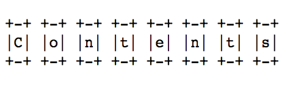

ASSIGNMENTS AND ASSESSMENT
You will be required to keep a log, give a presentation, develop your own prototype and user's manual, write a brief statement, and participate in workshops and discussions. Below are descriptions of the assignments together with grading rubrics for each. All assessment practices will follow the UVic Faculty of Graduate Studies Grading Scale.
Please note that the assignments are subject to minor changes as the seminar progresses. If I do make a change, then I will notify you by email. Also, the prototype, manual, statement, and presentation are essential to passing the course. Failure to complete these requirements will result in a failing N grade (calculated as a 0 for your GPA). I do not post marks outside my office, and I do not use plagiarism detection software.


LOG (two marks, each 20% of your final mark, due 12 October and 14 December)
At the beginning of the term, you will form groups of two, three, or four people (your choice). With this group, you will research and prototype your own indie game, and (as a group) you will keep one log documenting the group's work during and outside of seminar. Consider treating the log like a lab notebook, with hypotheses, lit reviews, documentation, experiments, findings, and reflections. The log will be assessed twice. I will mark it based on its: 1) consistency from week to week, 2) development over time, 3) self-reflexivity (including its awareness of methods and decisions), 4) integration of seminar discussions and course material, 5) quality (including its combination of critique with creativity and experimentation), 6) inclusion of documentation or sample material, and 7) attention to change (including notes on hiccups and surprises). Each entry in your log will be prompted. I will provide detailed instructions during seminar and on this website.
The tone and style of your log should be more formal than notes from seminar meetings but less formal than a seminar paper intended for an academic audience. Your entries should be self-aware, and feel free to reference work conducted by your peers or to spark dialogue with them via the log. Also, don't hesitate to combine your preferred modes of composition: writing, drawing, collage, outlining, sketching, graphing, programming, images, audio, video, etc. At some point early in the term, you'll need to create an online folder, site, or repository to share digital files with me and amongst your group. Then you can point me and others to the appropriate URL. For the purposes of this seminar, your log may be composed across digital and tactile media, with material available online and off. I recommend documenting the development of all media, including tactile media, using photography, video, or the like. In short, work done in the log should be steeped in evidence of iterative development.
For the log, grades will be assigned based on the following scale:
- 90-100 = A+: Logs in this range are incredibly detailed, filled with documentation, and demonstrate new or innovative uses of specific methods or techniques. They respond to seminar discussions, engage assigned material (including readings), are reflexive, and exhibit a combination of critical thinking, critical design, and creativity.
- 85-89 = A: Logs in this range are incredibly detailed and filled with documentation. They respond to seminar discussions, engage assigned material (including readings), are reflexive, and exhibit a combination of critical thinking, critical design, and creativity.
- 80-84 = A-: Logs in this range are incredibly detailed and filled with documentation. They respond to seminar discussions, engage assigned material (including readings), and are reflexive.
- 77-79 = B+: Logs in this range are filled with documentation. They respond to seminar discussions and are reflexive.
- 73-76 = B: Logs in this range are marginally acceptable at the graduate level.
I will assess your log twice. Please submit it on 12 October and then again on 30 November. Since you are developing one log per group and also conducting this work collaboratively, everyone in your group will receive the same mark for your log.

GAME PROTOTYPE AND USER'S MANUAL (30% of your final mark, due by 12p.m., 14 December)
Your group should create, develop, test, and share a working prototype for an indie game. Note that a prototype is not a complete game; for instance, it may be a functioning scene or sequence. The prototype should be accompanied by a user’s manual intended for reading without a screen. (You are welcome to make a screen-based version of your manual, too, if you wish. The existence of multiple formats increases accessibility.) The manual should be made as if your game were complete and ready for circulation. You are welcome to design and develop a game of any type/genre: 2-D, 3-D, turn-based strategy, multiplayer, single-player, platformer, RPG, text-based, action-adventure, simulation, sports . . . However, the game should correspond with your selected –ism.
Your prototype and manual should include:
- All of your assets and source files (e.g., images, code, audio, and video) compiled in a single folder or repository,
- An executable version of those files (i.e., a functioning game) that can be played with readily available controllers (such as keyboards),
- A README file containing a brief description (100-250 words) of your game,
- A name/title for your game,
- A list of everyone who contributed to the game (i.e., everyone in your group),
- A tactile user’s manual for your game as if it were complete (the manual should at least include instructions and rules for play),
- A draft or alpha version to me by 23 November, and
- A group consultation with me by 23 November.
You may submit your prototype and prototype files via a URL or USB stick. Please submit the manual to me in person or via my department box.
For the prototype and manual, grades will be assigned based on the following scale:
- 90-100 = A+: Games in this range are especially sophisticated, engaging, and perceptive pieces of work that make an original contribution to scholarly and/or popular thinking about games, new media, and/or digital/literary/cultural studies. They are ready for circulation, and they correspond with their –isms in clever and compelling ways.
- 85-89 = A: Games in this range are perceptive, engaging, and original, but may require substantial development for circulation. They could act as core material for a gaming project, and they correspond with their –isms in clever and compelling ways.
- 80-84 = A-: Games in this range are adequate at the graduate level with regard to the research, development, presentation, and quality of content. With additional work, they could act as core material for a gaming project. They correspond with their –isms in notable ways.
- 77-79 = B+: Games in this range have significant flaws in some areas, but they still meet graduate standards. With more work, they could act as core material for a gaming project. They demonstrate a basic understanding of their –isms.
- 73-76 = B: Games in this range are marginally acceptable at the graduate level.
The prototype and manual are due by 12p.m. on 14 December. Since you are developing one prototype and manual per group and also conducting this work collaboratively, everyone in your group will receive the same mark for your prototype and manual.

STATEMENT (15% of your final mark, due by 12p.m., 14 December)
The statement is your opportunity to speak to what you (as an individual) contributed to your group's prototype, what you learned in the process, and where you'd take the project with more time, labour, and resources. The statement should be written individually, and it should not be treated as an academic essay. Its conventions might borrow from an artist's, designer's, or developer's statement, and it should be written in the first-person. It should consist of 500-750 words, and it may include screen grabs (or the like) of your group's prototype. It may draw upon readings from or related to the course (including material about your –ism); however, it's not an analytical paper. Instead, it should draw upon details from your prototype, log, presentation, manual, and –ism to not only communicate but also demonstrate your prototype as:
- A learning process (both intimate and social) involving experiments, hiccups, surprises, and success,
- A playable indie game with features, bugs, limitations, perks, expectations, an audience, and an interface, and
- A responsibility, or something with your name on it, out there for others, with assumptions, consequences, and room for development.
For the statement, grades will be assigned based on the following scale:
- 90-100 = A+: Statements in this range are incredibly compelling, self-aware, and steeped in detail. They demonstrate what was learned during the prototyping process and provide convincing evidence of that learning. They also speak thoroughly to matters of audience (expectations and actual play) and how the prototype could be improved, with attention to what works, what doesn't, and what's unknown or uncertain. These statements would be examples for other students who may take an indie games course in the future.
- 85-89 = A: Statements in this range are incredibly compelling, self-aware, and steeped in detail. They demonstrate what was learned during the prototyping process and provide evidence of that learning. They also speak to matters of audience (expectations and actual play) and how the prototype could be improved, with attention to what works, what doesn't, and what's unknown or uncertain.
- 80-84 = A-: Statements in this range are self-aware and steeped in detail. They demonstrate what was learned during the prototyping process and provide evidence of that learning. They also speak to how the prototype could be improved, with attention to what works, what doesn’t, and what’s unknown or uncertain.
- 77-79 = B+: Statements in this range are steeped in detail. They demonstrate what was learned during the prototyping process and provide evidence of that learning.
- 73-76 = B: Statements in this range are marginally acceptable at the graduate level.
Your statements are due by 12p.m. on 14 December. Feel free to email them to me in DOCX, PDF, RTF, MD, or HTML. They can be submitted as attachments or via URLs.

PRESENTATION at OPEN THE ARCADE (15% of your final mark, on 30 November)
Our final seminar meeting ("Open the Arcade") will mimic an indiecade event, with everyone from the seminar presenting their playable prototypes to a public audience. I will make posters for the event and circulate an announcement around campus. You are welcome to do the same.
Your group presentation should include the following:
- A ten-minute talk (by the group) about your game, including its aims, assumptions, aesthetic, and audience,
- A functioning prototype of your game, available for other people to play, and
- A "one-sheet" describing or releasing your game to newcomers (one-sheets are common in press kits.). The one-sheet should be printed and either mounted next to your prototype or distributed by hand to visitors.
For the presentation, grades will be assigned based on the following scale:
- 90-100 = A+: Presentations in this range are well prepared, compelling, and even memorable. They prompt the audience to ask questions and to also play the prototype. They are grounded in the prototype itself, discuss its relation to an –ism, highlight its aims and features, and speak to its intended audience. They use visual and/or auditory material (images, video, code, and/or audio) in a persuasive fashion.
- 85-89 = A: Presentations in this range are well prepared and compelling. They prompt the audience to play the prototype. They are grounded in the prototype itself, discuss its relation to an –ism, highlight its aims and features, and speak to its intended audience. They use visual and/or auditory material (images, video, code, and/or audio) in a persuasive fashion.
- 80-84 = A-: Presentations in this range are well prepared and compelling. They prompt the audience to play the prototype. They are grounded in the prototype itself, discuss its relation to an –ism, and highlight its aims and features. They use visual and/or auditory material (images, video, code, and/or audio).
- 77-79 = B+: Presentations in this range prompt the audience to play the prototype. They are grounded in the prototype itself and highlight its aims and features.
- 73-76 = B: Presentations in this range are marginally acceptable at the graduate level.
The presentations are scheduled for our last seminar meeting (on 30 November). Since you are developing one prototype per group and also conducting this work collaboratively, everyone in your group will receive the same mark for your presentation.
The University of Victoria's Department of English acknowledges and respects the Songhees, Esquimalt, and WSÁNEĆ peoples on whose traditional territories the University stands and whose historical relationships with the land continue to this day.
I owe an incredible debt of gratitude to Anna Anthropy, Mattie Brice, Ed Chang, Naomi Clark, Mary Flanagan, Tracy Fullerton, Patrick Jagoda, merritt k, Kari Kraus, Elizabeth LaPensée, Allison Parrish, Paolo Pedercini, Amanda Phillips, Noah Wardrip-Fruin, and Robert Yang, whose approaches to teaching and making games have especially influenced the construction of this syllabus.